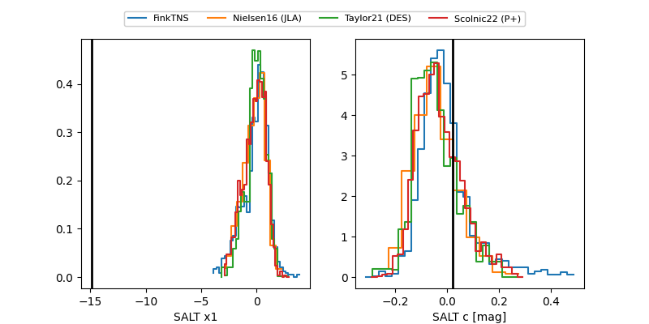

FINK: ZTF25abrokoq
Lasair: ZTF25abrokoq
ALeRCE: ZTF25abrokoq
ZTF25abrokoq (ztf,fink)
equatorial (ra, dec) = (51.1758,+33.74615)
galactic (l, b) = (155.9970,-19.10635)

last ztfr=20.42
3 ztfr detections